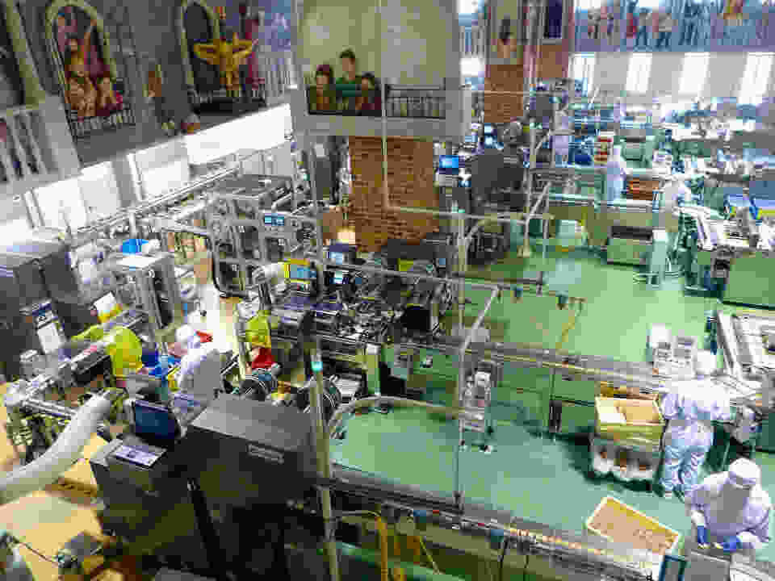

En 1996, continuando con la antigua tradición Fermonsel y respetando y revalorando la calidad por sobre todas las cosas, inaugura ChocoStack, con un local de elaboración y venta en la calle Mitre al 202, una marca que encierra “la historia” de fidelidad y amor por el chocolate artesanal y la tradición familiar. Todo en ChocoStack está pensado para el deleite, incluida su bella cafetería con exquisitas tortas, ricos alfajores y la fuente de chocolate. En el año 2009 ChocoStack lanzó su nueva, original y exquisita línea de helados artesanales, demostrando nuevamente la dedicación y esmero de la familia Fermonsel. En el año 2010 ChocoStack abre las puertas de la Patisserie, un maravilloso lugar con encanto propio. En él se pueden degustar esponjosos y llamativos cupcakes, el gingerman cookie y finas masas entre muchas delicias.